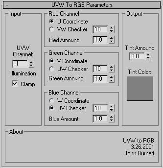

RGB to UVW
Uses UVW or Per-Vertex channels to shade the surface of an object. Useful for viewing how the UV mapping flows along a surface.

Options:

- Input Group:
- UVW Channel:
Selects which UVW channel you want to display. Note that if you're using Max4, you can set this to less than 1, in which case the number has the following meaning:
- Channel 0: Per-Vertex Colors
- Channel -1: Per-Vertex Illumination
- Channel -2: Per-Vertex Alpha
- Clamp:
If on, UVW coordinates are clamped to a 0.0 -> 1.0 range (this is what the Vertex Color texture does). Otherwise, UVW values are wrapped (ie. 1.5 becomes 0.5).
- Channel Groups:
Use these options to choose what gets stuffed into the map's color channels.
- U/V/W Coordinate:
Directly use the U, V, or W coordinates in the map's color channel.
- VW/UW/UV Checker:
Tiles a checker pattern across the object. The spinner controls how many squares are in the checker pattern.
- R/G/B Amount:
Allows you to fade down the specified channel to 0. Mostly useful to lower the Blue Amount to give the default checker pattern less contrast.
- Output Group:
Lets you adjust the brightness and contrast of the map to be easier on the eyes.
- Tint Amount:
How much to tint the map.
- Tint Color:
The color to tint towards.
Back To Top...
Known Bugs/Limitations:
- You cannot see an object's W coordinates in the viewport, though they will be visible when the object is rendered.
- Trying to display Per-Vertex Color, Illumination, or Alpha using the texture's "Show Map In Viewport" button isn't recommended. The display will likely not be helpful, and you'll get better results just using the standard object properties checkbox.
Back To Top...
History:
2000.02.07 - Created.
2000.02.09 - Changed brightness/contrast to Tint Color and Amount (duh).
2000.08.23 - Bug fix, added R/G/B Amount.
2001.01.25 - Finally got around to adding "Clamp". Ooo.
2001.03.26 - Added support for per-vertex illuminatin and alpha in Max4.
2007.02.20 - Updating for public 3dsmax9 release.
2008.04.05 - Updated to 64 bit and 3dsmax 2008. Thanks to David Baker for the help.
Back To Top...
Contact / Disclaimer / License:
Bug reports/comments/suggestions: http://www.footools.com/. If you use this software on a project, sending an e-mail/postcard indicating such would be appreciated.
This software is provided 'as-is', without any express or implied warranty. In no
event will the author be held liable for any damages arising from the use of this
software.
Permission is granted to anyone to use this software, subject to the following
restrictions:
1. The origin of this software must NOT be misrepresented; you must not claim that
you wrote the original software.
2. This software may NOT be bundled with any other product or included in any
compilation without the express permission of the author.
3. This notice must NOT be removed or altered from any distribution of this
software.
Back To Top...